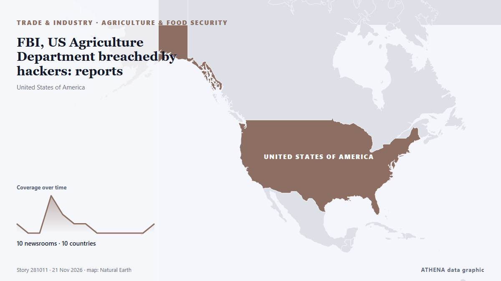

Commerce, industrie et infrastructures
SponsoriséPrésenté par  Cybernetics and Artificial Intelligence Lab Welcome to the Cybernetics and Artificial Intelligence Laboratory, established at the Department of Business Administration of the National and Kapodistrian University of Athens. The lab is headed by Professor Dimitrios Thomakos. The lab aims to do research that can be published in top venues. Our research uses tools and methods of Artificial Intelligence, and lies in the following areas: - Forecasting - Decision making - Cyber security - Finance We are always looking forward to collaborating with exceptional students!
Cybernetics and Artificial Intelligence Lab Welcome to the Cybernetics and Artificial Intelligence Laboratory, established at the Department of Business Administration of the National and Kapodistrian University of Athens. The lab is headed by Professor Dimitrios Thomakos. The lab aims to do research that can be published in top venues. Our research uses tools and methods of Artificial Intelligence, and lies in the following areas: - Forecasting - Decision making - Cyber security - Finance We are always looking forward to collaborating with exceptional students!
Les titres sont affichés en anglais, tels que publiés.

Agriculture et sécurité alimentaireFBI, US Agriculture Department breached by hackers: reports
The US Agriculture Department and the Federal Bureau of Investigation (FBI) were breached by hackers in cyberattacks, US media reported on Saturday, as concerns deepened over the recent spate of tech… de Dawn
| 8 nov. | 49 |
|---|---|
| 9 nov. | 118 |
| 10 nov. | 145 |
| 11 nov. | 109 |
| 12 nov. | 94 |
| 13 nov. | 85 |
| 14 nov. | 77 |
| 15 nov. | 68 |
| 16 nov. | 122 |
| 17 nov. | 93 |
| 18 nov. | 100 |
| 19 nov. | 66 |
| 20 nov. | 77 |
| 21 nov. | 15 |
EU and Indonesia officially sign ‘ambitious’ trade deal
The agreement includes a dedicated protocol on palm oil. de Euractiv
Waymo recalls robotaxis after they drove into closed freeway lanes
The recalls come after the California DMV banned Waymo from operating on its state freeways. de Engadget
Zelensky says Crimean Bridge strikes ‘fair response’ as he meets UK’s Streeting
Ukraine's president says Kyiv acted after 109 separate Russian aerial attacks on bridges in Ukraine. de BBC News
Thailand to seek US tariff cut after reaching key terms of trade deal, says minister
Thailand is expected to push for a cut in the US Section 301 tariff related to forced labour to 10% from 12.5%, in line with Cambodia, Indonesia and Malaysia. de Free Malaysia Today
Indonesia elected to ICAO Council for 2026--2028 term
Indonesia has been elected as a member of the Council of the International Civil Aviation Organization (ICAO) for the ... de Antara (English)
Crimean Bridge Shut After Ukrainian Strike as Russia Claims Record 1,336 Drones Downed
Ukrainian forces attacked the Crimean Bridge overnight on Nov. de Kyiv Post
First Ladies of Azerbaijan and Vietnam visited Heritage House in Hanoi
On November 21, First Lady of the Republic of Azerbaijan Mehriban Aliyeva had a meeting with First Lady of Vietnam Ngo Phuong Ly at the Heritage House in Hanoi. de AzerNews
At least 36 trains robbed; 14 accused in $22.5 million Nike cargo theft racket in US
Fourteen people have been indicted in the US for allegedly stealing over $22.5 million worth of cargo from at least 36 freight trains in Southern California. de Times of India (World)
EU and Indonesia sign trade deal after 10 years of negotiations
Both sides will remove import duties on more than 90% of products, including Indonesia's duties on EU automotive exports, currently reaching up to 50%. de Free Malaysia Today
Abinader positions Dominican Republic as bridge between Latin America and Middle East
Cap Cana, La Altagracia.- President Luis Abinader highlighted new opportunities for investment, tourism, trade, logistics and free trade zones with the United Arab Emirates during the opening of the… de Dominican Today
All 146 Air Niugini Plane Passengers and Crew Safe after an Emergency Landing in Philippines
An Air Niugini plane carrying 146 passengers and crew from Hong Kong to Papua New Guinea has safely made an emergency landing in a southern Philippine city due to a warning of a possible engine fire. de ABC News (International)
Prosecutor: Tata Steel intentionally polluted IJmuiden 598 times
Tata Steel intentionally released harmful substances into the environment 598 times, the Public Prosecution Service (OM) said during the first day of the. de NL Times
Ukraine hits ammunition depot in Crimea and bridge in Luhansk Oblast
Ukraine's defence forces struck an ammunition depot in Russian-occupied Crimea, two Russian command posts in Zaporizhzhia and Donetsk oblasts, and a road bridge near Luhansk on 20 November and the… de Ukrainska Pravda (English)
Horror moment Pontins ceiling crashes down as granny suffers fatal injuries
Wendy Jones sustained severe injuries in the incident at Pontins in 2019, which directly led to her death six months later. de Liverpool Echo
UK and EU reach deals on food trade and youth mobility
A key UK demand is that the EU grant it special status under the bloc's "Made in Europe" rules, notably for cars. de The New Arab
Carnival Orders Two LNG-Powered Cruise Ships from Fincantieri
Italian shipbuilder Fincantieri has signed a contract with Carnival Corporation to design and build two dual-fuel cruise ships for Carnival Cruise Line, with deliveries scheduled for 2033 and… de MarineLink
The chip war’s next battleground
As the US and China’s AI rivalry intensifies, focus is moving to supply chains. de Financial Times - Global economy
Hong Kong commerce chief ‘cautiously optimistic’ after China-US-Russia peace declaration
The China-US-Russia joint peace declaration at the Apec Summit sent a positive message about the global and local economies, but Hong Kong should remain “cautiously optimistic” as problems could not… de South China Morning Post
Lufthansa plans to cut 1,000 jobs amid Iran war fallout
Lufthansa to cut 1,000 jobs on slow turnaround, fuel costs. de Gulf News
Singapore maritime plan teased as PSA breaks ground on Tuas phase 2
A new master plan will be released next year, focusing on expanding capacity across the city-state's maritime ecosystem, harnessing technology and innovation, and investing in the workforce, the… de The Journal of Commerce (JOC)
Outages in US cause worry, despite official attempts to downplay concerns
Experts say Trump administration is not taking the threat of AI attacks seriously, as consumers stock up on supplies. de Al Jazeera English
Greek PM signals construction restrictions on Mykonos & Santorini
Prime Minister Kyriakos Mitsotakis on Thursday raised the possibility of imposing restrictions on new building development on islands such as Mykonos and Santorini in Greece’s new spatial planning… de Keep Talking Greece
‘Doomsday prepping’ spikes in US as tech outages drive shopper paranoia
Recent emergency preparedness campaigns across the world have contributed to the consumer anxiety. de The Straits Times
Judge orders US agriculture chief to stop sending religious emails from official account
A US judge ordered, Agriculture Secretary Brooke Rollins to stop sending religious emails to employees from her official account,. de MyJoyOnline
Ningbo-Zhoushan Port's container throughput for 2026 exceeds 40 million TEUs
The Port of Savannah handled 565,366 TEUs in October 2026, an increase of 25% compared with the same month last year, according to the Georgia Ports Authority (GPA). de Container News
S’porean charged with trafficking 19kg of cannabis at Ipoh airport
No plea was recorded from Chen Long in the Ipoh magistrates' court as the case falls under the High Court's jurisdiction. de Free Malaysia Today
Tajikistan–Afghanistan Border Market Proposed to Boost Trade
Tajikistan has proposed establishing a joint border market with Afghanistan. de The Times of Central Asia
President Zardari felicitates Oman’s Sultan on 56th National Day
Dubai: Sultan Haitham bin Tarik of Oman has granted a royal pardon to 344 prisoners to mark the Sultanate's 56th National Day, the Oman News Agency (ONA) reported on Thursday. de Gulf News
Sallaum Logistics opens inland customs bonded compound in the Port of Limburg, Genk
The new site extends the Sallaum Terminal in Antwerp inland reachable by river, rail and road Sallaum Logistics is opening. de Cyprus Shipping News
Russia cannot dictate 'unrealistic security demands': UK premier
Andy Burnham says Europe ready to 'enter serious discussions on European security, but only if a peace agreement is reached between Ukraine and Russia' de Anadolu Agency (English)
A third Ukrainian strike in 4 days halts rail traffic on Russia's Kerch Bridge to Crimea
Ukraine has launched a third aerial attack in four days on the Kerch Bridge, a crucial link between Russia and Crimea. de ABC News (International)
(EDITORIAL from The Korea Herald on Nov. 20)
A test can survive a noisy morning and still fail a test of public confidence. de Yonhap (English)
Maersk and Hapag-Lloyd return three more Gemini services to Suez
Maersk and Hapag-Lloyd will return three additional Gemini Cooperation services to the Red Sea and Suez Canal route on a structural basis. de Container News
Egypt, Libya sign cooperation agreements after talks in Cairo
Deals cover energy, infrastructure, scientific research, labor, small businesses. de Anadolu Agency (English)